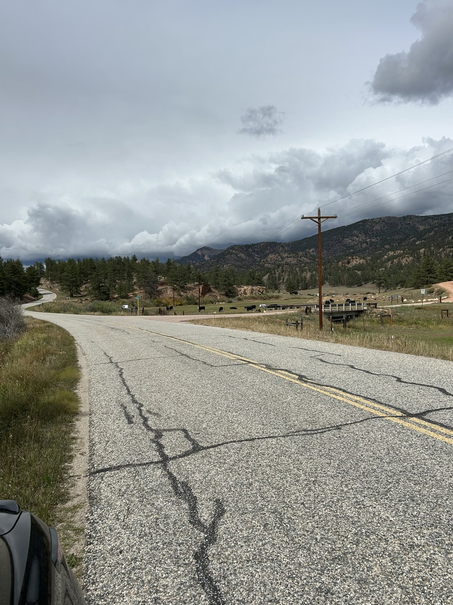
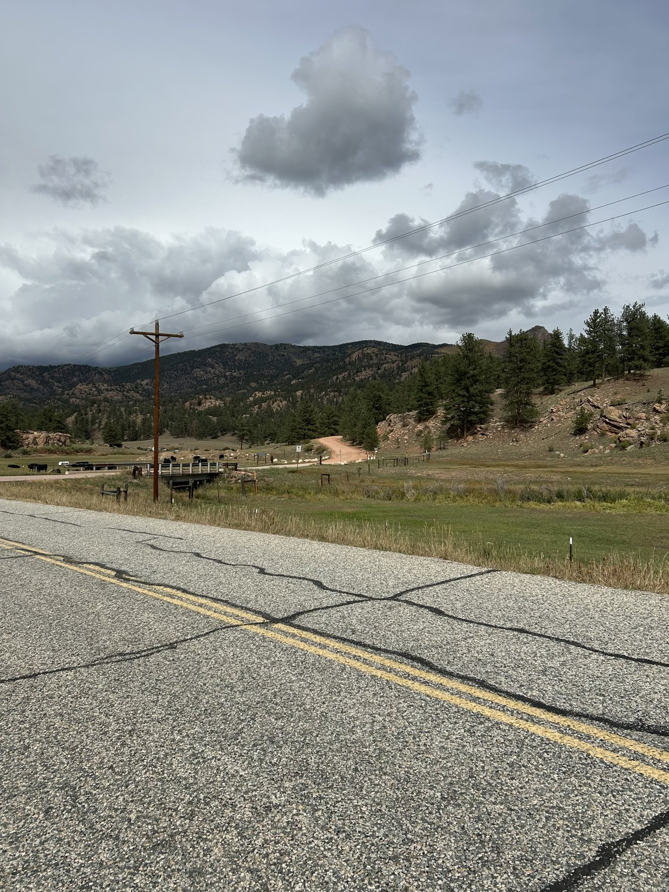
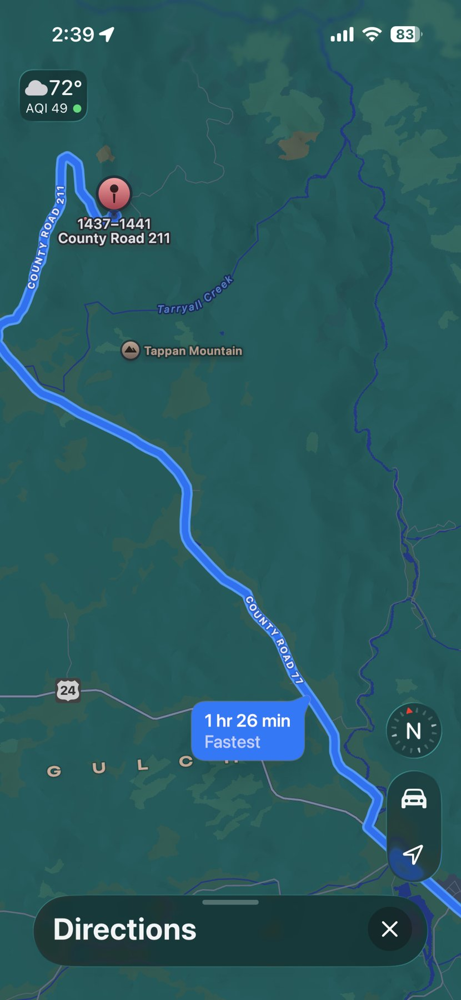
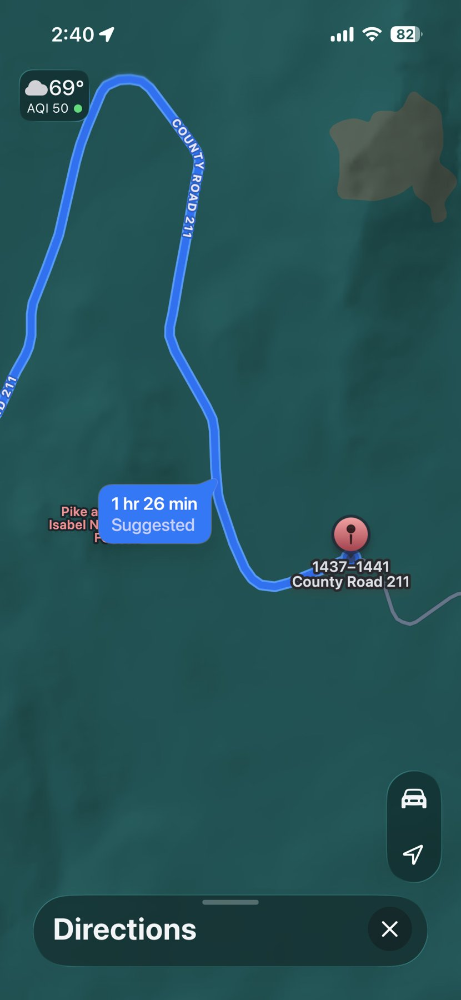

Wedding site
39.09397, −105.38774
Parking and the wedding site have separate pins. Use the parking pin for your arrival.
From Colorado Springs
The drive, step by step
Head west on US-24
From I-25, take exit 141 for US-24 West / Cimarron Street. Follow US-24 west through Woodland Park, Divide, Florissant, and Lake George.
Turn right onto County Road 77
Continue about 7 miles on County Road 77.
Watch for mile marker 35
The turn is coming up on your right. Turn right onto County Road 211, the dirt road pictured below.
Continue toward parking
The supplied route shows about 3.2 miles on County Road 211 to its destination pin. Use the separate parking coordinates above for guest parking.
Distances are approximate, based on the supplied route screenshot. Save the PDF and your map directions before leaving.
Recognize the turn
After mile marker 35, look to the right for the small bridge and reddish dirt road.


See the road before you go
Two short clips to help you recognize the surroundings.
Route video 2
Download video 2View the blue-line route maps
These supplied screenshots show the original destination pin. Use the separate parking coordinates above. Travel times shown belong to the original trip.



